DiTing 表征接入多台站 PGA / Event 预测
Transformer readout 与 graph prior-residual 的实验诊断
交流目标
说明做了什么、结果如何、问题在哪里，并请专家对数据、结构和先验设计提意见。
主线判断
station feature 有信号；坍塌主要发生在 full-model readout 和空间先验不足。
这次希望专家帮忙看的点
- P-pick 是否足够准确，是否会污染 station feature 和 PGA label 对齐。
- event 信息如何进入 PGA：event query、mag/loc context、GMPE prior，还是显式震源参数。
- 任意 target PGA 更适合 cross-attention readout，还是 graph message passing。
- 小样本 overfit 诊断后，下一步验证集和消融实验如何设计。
特别新增
P-pick 波形抽样页和实现级模型结构图，方便现场诊断。
当前任务：从单台站 DiTing 到多台站事件/PGA 预测
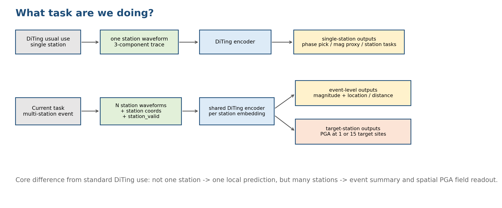
任务设置
- 输入：N 个台站的三分量波形、台站坐标、station_valid mask。
- 目标查询：event query 用于震级/位置；PGA target query 用于给定 target station 的 PGA。
- 输出：event-level magnitude / location 或震中距；target-level PGA。
- 核心区别：不是单个台站独立预测，而是多个台站共同约束一个事件和一个空间 PGA 场。
数据覆盖与抽样样本
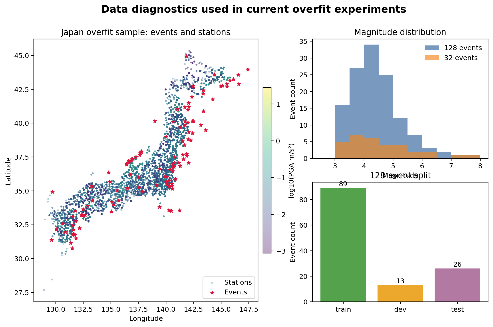
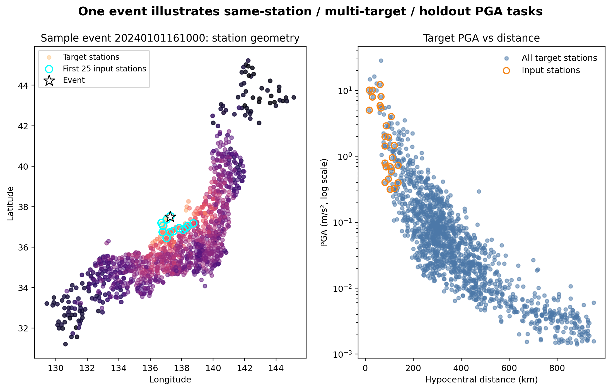
P-pick 生成流程与元数据诊断
- 当前 P-pick：先用走时曲线给粗定位，再用 STA/LTA 在搜索窗内 refine。
- 左图：最终 pick 的来源，主要是 STA/LTA threshold，少量退化为 STA/LTA argmax。
- 中图：STA/LTA refine 后 pick 与走时粗定位 pick 的时间差，检查系统性早/晚偏差。
- 右图：P pick 处 STA/LTA ratio 随震中距和 PGA 的分布，检查低信噪比远台站风险。
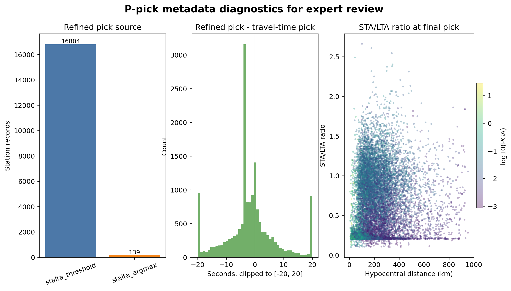
P-pick 波形抽样：请专家现场看
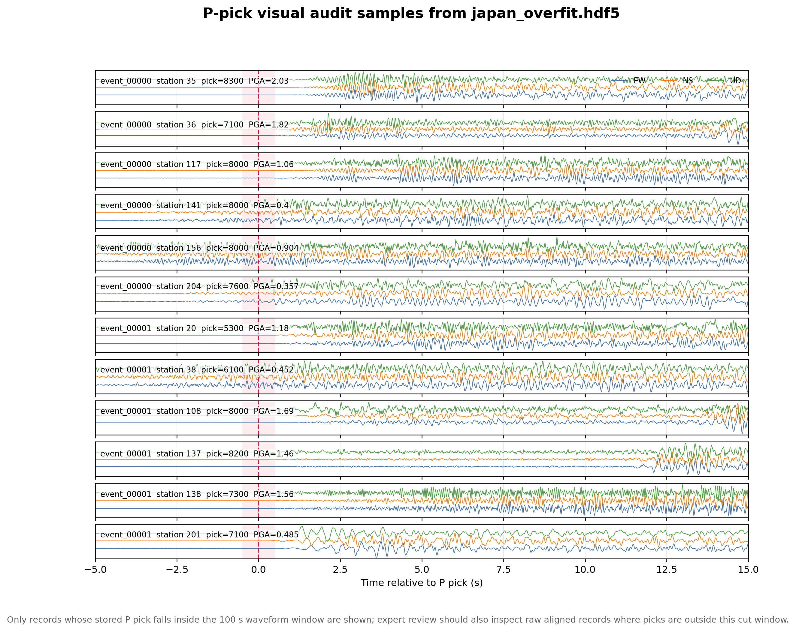
红虚线为当前存储 P-pick。这里只展示 pick 落在 100s HDF5 窗口内的样本；pick 在固定训练窗口外的记录需要回到原始对齐数据继续抽查。
实现级模型总览：和后面表格的对应关系
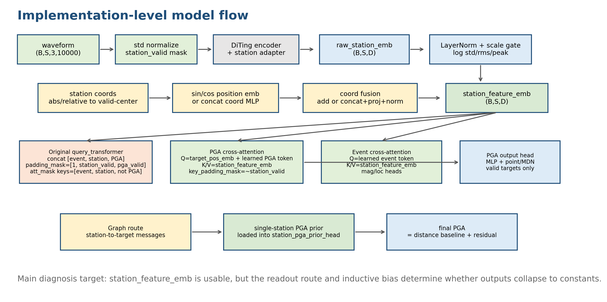
- 表格中的 Route 对应底部三条 readout 分支：query_transformer、cross-attention、graph prior-residual。
- 所有路线共用上半部分 station_feature_emb：DiTing encoder、station adapter、amplitude scale gate、coordinate fusion。
- 后续结果表按 readout 分支分组；同一分支内再比较 input/target 选择、overfit_n、是否有 prior/baseline。
模型规模与可训练参数
| Component | Total params | Trainable params | Status | Note |
|---|---|---|---|---|
| DiTing encoder | 1,234.0M | 0 | Frozen | Exact count from local TEAM cross-attention instantiation. |
| Station adapter | 3.59M | 3.59M | Trainable | Adapts frozen waveform encoder output to station embedding. |
| TEAM cross-attn full model | 1,262.0M | 28.0M | Trainable heads/readout only | Exact count for pga15_cross_overfit128 config. |
| Graph prior-residual extra | ~10.0M | ~10.0M | Trainable | Analytic estimate: GraphPGAReadout ~9.02M + prior head ~1.00M. |
| Graph prior-residual full model | ~1,272M | ~38M | Approx. | Exact local instantiation blocked by missing dtbench in team_pytorch2 env. |
关键点：总参数量主要来自 frozen DiTing encoder；当前 overfit 诊断实际训练的是 adapter、readout 和 task heads。Graph 参数量为实现结构的近似拆分，TEAM cross-attention 为本地精确计数。
Loss 函数设计
| Stage | Tasks | Loss | Weights | Implementation note |
|---|---|---|---|---|
| single-station pretrain | mag, epidist, pga | Huber(delta=1) | 0.3 / 0.3 / 0.4 | Freeze encoder; train adapter + single-station heads. |
| full PGA-only runs | pga | Huber(delta=1) | 1.0 | Loss only on valid PGA targets. |
| full event+PGA runs | mag, loc, pga | Huber(delta=1) | 0.2 / 0.2 / 1.0 | Joint readout test; mag/loc collapse is part of diagnosis. |
| graph prior-residual runs | pga | Huber(delta=1) | 1.0 | Final PGA = distance baseline + learned residual. |
- single-station 阶段：L = 0.3 L_mag + 0.3 L_epidist + 0.4 L_pga。
- PGA-only full model：只在有效 target PGA 上计算 Huber loss。
- event+PGA full model：L = 0.2 L_mag + 0.2 L_loc + 1.0 L_pga。
- 这些实验使用 point prediction；收敛曲线下降不等于 readout 不坍塌，仍需看 corr、slope 和 pred std。
Single-station model 效果：waveform 表征有效
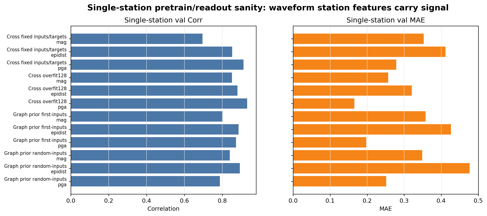
| Model | Task | Samples | MAE | Corr |
|---|---|---|---|---|
| Cross overfit128 | mag | 231 | 0.257 | 0.851 |
| Cross overfit128 | epidist | 231 | 0.321 | 0.879 |
| Cross overfit128 | pga | 231 | 0.165 | 0.931 |
| Cross fixed inputs/targets | mag | 61 | 0.353 | 0.695 |
| Cross fixed inputs/targets | epidist | 61 | 0.412 | 0.851 |
| Cross fixed inputs/targets | pga | 61 | 0.278 | 0.912 |
| Graph prior first-inputs | mag | 80 | 0.358 | 0.801 |
| Graph prior first-inputs | epidist | 80 | 0.427 | 0.885 |
| Graph prior first-inputs | pga | 80 | 0.198 | 0.872 |
| Graph prior random-inputs | mag | 78 | 0.349 | 0.839 |
| Graph prior random-inputs | epidist | 78 | 0.477 | 0.893 |
| Graph prior random-inputs | pga | 78 | 0.252 | 0.787 |
single-station mag / epidist / PGA 在 val 上均有明显相关性，说明 waveform encoder + station adapter 不是完全无效；full model 的常数化更像 readout/空间传播问题。
全部实验总览：不是只做了少数代表实验
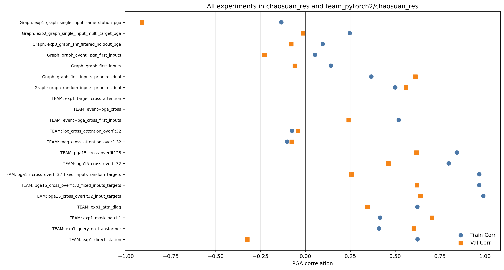
- TEAM 路线当前有 14 个实验；graph 路线当前有 7 个实验。
- 图中圆点为 train PGA corr，方块为 val PGA corr。
- 灰色表示 eval 失败或没有 PGA metrics，不能作为性能结论。
- 后续主线页只展示代表实验，完整表格在 backup/CSV。
原始 TEAM / query_transformer readout
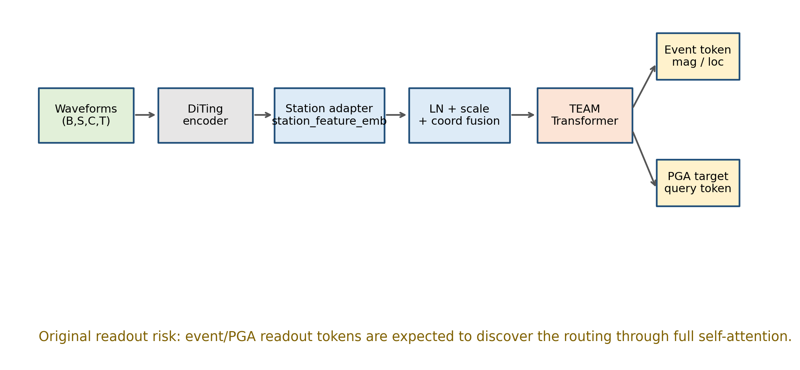
- PGA query = target coordinate embedding + learned PGA query token。
- concat 后进入 full Transformer；PGA key 被 mask，PGA 作为 query-only token。
- event token 与 station token 共用 self-attention readout。
- 风险：读出路径要靠训练自己发现，容易走向均值解。
原始 full self-attention readout：几个 ablation 是什么
| Model | Setting | Purpose |
|---|---|---|
| query_transformer | PGA target token enters full Transformer with event/station tokens | tests original readout; tends to constant |
| mask_batch1 | same as query_transformer but batch size 1 for mask sanity | checks cross-batch leakage/mask issue |
| query_no_transformer | target coordinate + learned query token only, no station readout | control for target-position-only shortcut |
| direct_station | masked mean station_feature_emb -> PGA head | checks whether station feature/head contains signal |
| target_cross_attention | PGA target query cross-attends station_feature_emb | intended fix; earlier eval failed/no metrics |
这些实验共同定位：是 readout/路由问题，还是 station feature/PGA head 本身无效。
原始 full self-attention readout 的坍塌
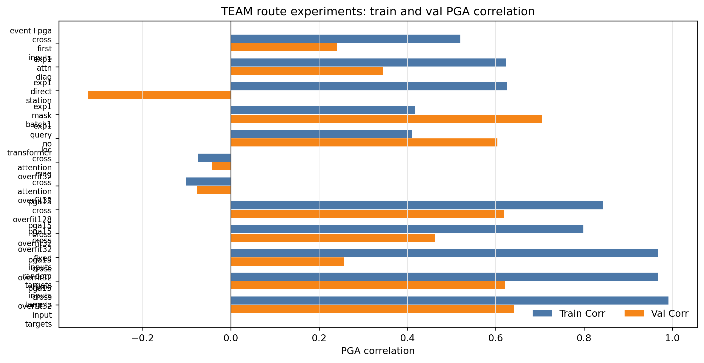
| Method | Train Corr | Train slope | Val Corr | Val slope |
|---|---|---|---|---|
| query_transformer | 0.624 | 0.000 | 0.345 | 0.000 |
| mask_batch1 | 0.416 | 0.000 | 0.704 | 0.000 |
| query_no_transformer | 0.411 | 0.327 | 0.604 | 0.487 |
| direct_station | 0.837 | 0.580 | 0.537 | 0.250 |
Attention / mask 诊断结论
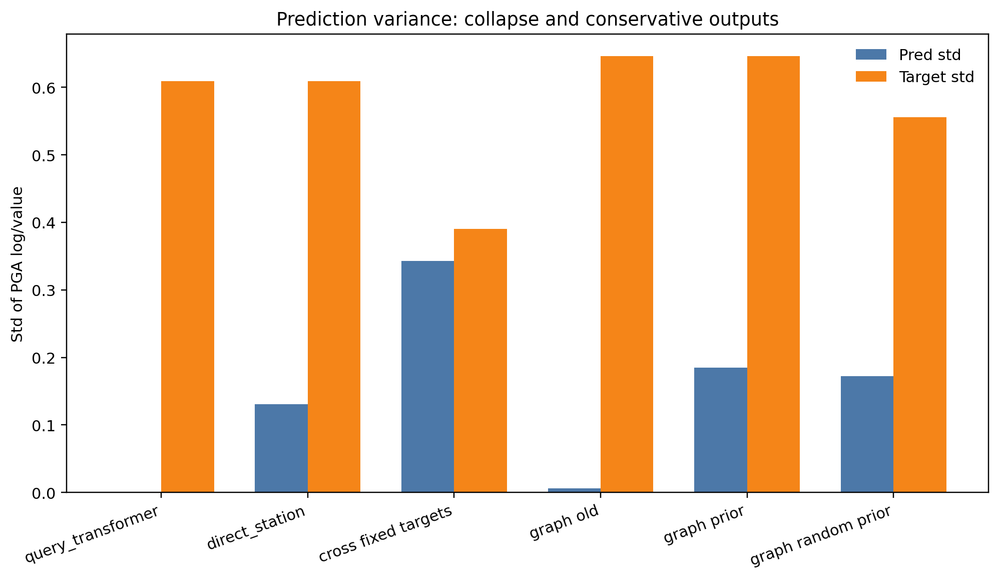
- query_transformer：PGA token 与 event/station 一起进 full self-attention，是原始方案。
- mask_batch1：只改 batch=1 和 mask sanity，仍常数，跨 batch 泄露不是主因。
- query_no_transformer：只有 target query，没有 station value，作为负对照。
- direct_station：直接读 pooled station feature，可检验 station embedding 和 head 是否有信号。
- PGA query 后期可以 attend 到 station，但输出方差仍被压扁。
- 0.11111 诊断 bug 已修：区分 key-type mask 与 padding 后 effective key mask。
Cross-attention readout 设计用意
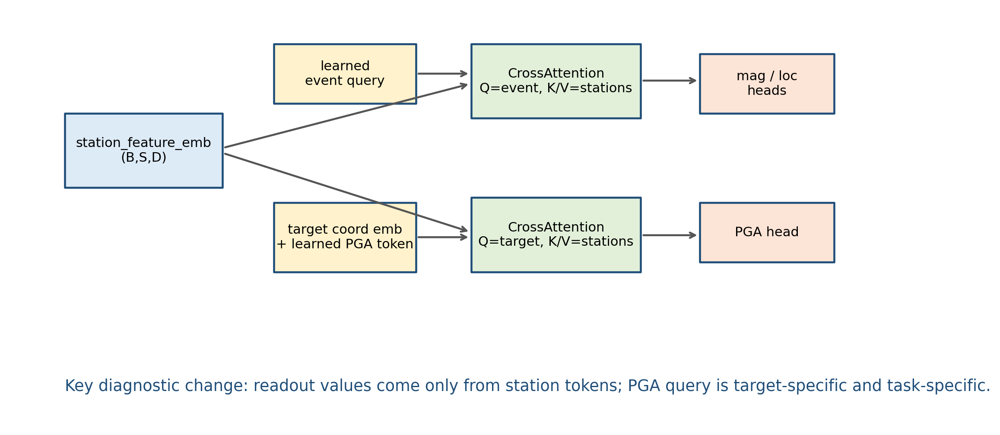
- 设计目标：让 target/event query 单向读取 station tokens，避免 full self-attention 中 event/PGA token 互相干扰。
- PGA Q：target coordinate embedding + learned PGA token。
- K/V：station_feature_emb；key_padding_mask=~station_valid。
- 输出不加 query residual，使输出值更直接来自 station tokens。
- 可选 distance_bias：由 target-station rel xyz + distance 产生 attention bias。
Cross-attention 各实验设置
| Model | Setting | Purpose |
|---|---|---|
| pga15_cross_overfit32 | overfit_n=32; 15 PGA targets; random inputs/targets | baseline cross-attn small sample |
| pga15_cross_overfit128 | overfit_n=128; 15 PGA targets; random inputs/targets | larger overfit sample |
| fixed_inputs_targets | overfit_n=32; same input stations and same targets | easiest memorization/route sanity |
| input_targets | overfit_n=32; input stations also used as targets | same-station PGA readout sanity |
| fixed_inputs_random_targets | overfit_n=32; fixed inputs, random targets | tests spatial interpolation beyond fixed targets |
| event+pga_cross_first_inputs | event and PGA both cross-attend; first input stations | joint event/PGA readout test |
| mag/loc_cross_overfit32 | event task emphasized with cross-attention | checks event readout collapse |
overfit_n=32/128 的区别在样本事件数；fixed/input/random target 用来拆分记忆、同台站读出和空间泛化。
Cross-attention 实验结果：train 和 val 都要看
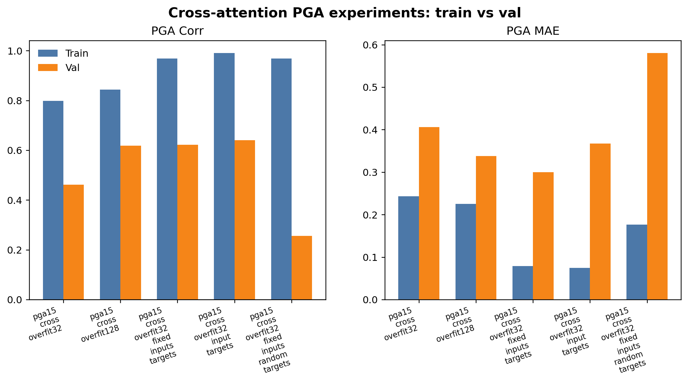
| Experiment | overfit_n | Setting | Train Corr | Val Corr | Train MAE | Val MAE |
|---|---|---|---|---|---|---|
| event+pga_cross | unknown | random inputs/targets | ||||
| event+pga_cross_first_inputs | 32-like | first input stations | 0.520 | 0.241 | 0.424 | 0.359 |
| exp1_target_cross_attention | 32-like | random inputs/targets | ||||
| loc_cross_attention_overfit32 | 32 | random inputs/targets | -0.075 | -0.042 | 1.579 | 1.730 |
| mag_cross_attention_overfit32 | 32 | random inputs/targets | -0.102 | -0.077 | 1.581 | 1.732 |
| pga15_cross_overfit128 | 128 | random inputs/targets | 0.843 | 0.618 | 0.226 | 0.338 |
| pga15_cross_overfit32 | 32 | random inputs/targets | 0.798 | 0.462 | 0.244 | 0.406 |
| pga15_cross_overfit32_fixed_inputs_random_targets | 32 | fixed inputs; random targets | 0.969 | 0.256 | 0.176 | 0.581 |
| pga15_cross_overfit32_fixed_inputs_targets | 32 | fixed inputs; fixed targets | 0.968 | 0.621 | 0.079 | 0.300 |
Graph prior-residual：实现细节与为什么有效
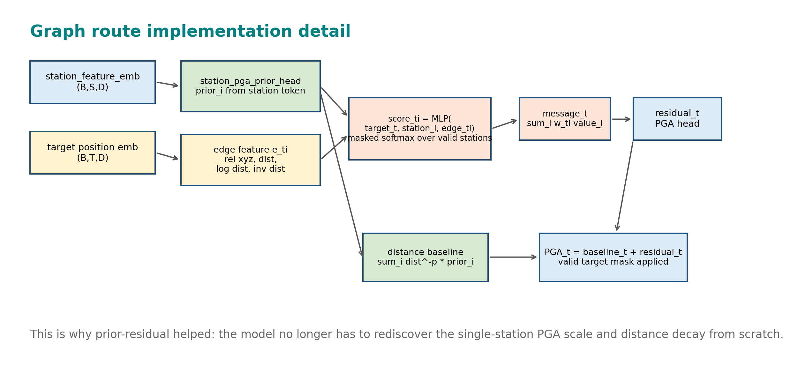
- station_pga_prior_head 从 single-station 预训练加载，提供输入台站 PGA scale。
- distance baseline 用 dist^-p 对输入台站 prior 加权，给出物理上更合理的初值。
- graph message passing 只学习 residual，降低从零学习空间场的难度。
- 旧 graph 仍坍塌，说明“有 graph”本身不够，关键是 prior + baseline + residual 路径。
Graph 路线各实验设置
| Model | Setting | Purpose |
|---|---|---|
| graph first-inputs | GraphPGAReadout without station prior/distance baseline | old graph; still collapses |
| graph event+pga first-inputs | graph PGA plus event task | tests joint event/PGA route |
| prior-residual first-inputs | single-station PGA prior + distance baseline + residual | best current graph setting |
| prior-residual random-inputs | same prior-residual, random input stations | harder input selection |
| exp1 same-station | single input and same-station target | old graph sanity |
| exp2 multi-target | single input and multiple targets | old graph spatial readout |
| exp3 holdout | SNR-filtered holdout targets | old graph harder holdout task |
prior-residual 和 old graph 的区别不是“有没有 graph”，而是是否显式接入 single-station PGA prior 与距离 baseline。
Graph 路线实验结果：train 和 val 都要看
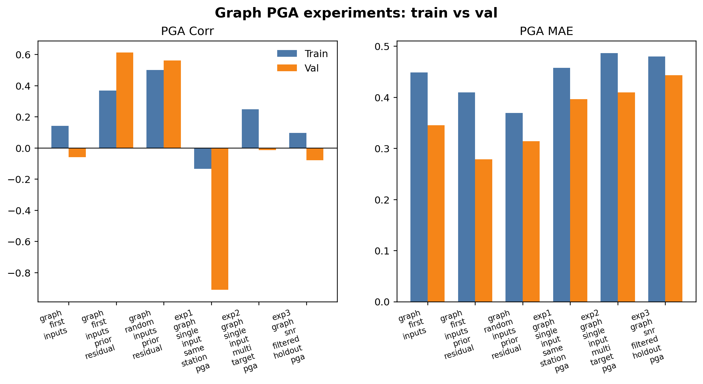
| Experiment | Setting | Train Corr | Val Corr | Train MAE | Val MAE |
|---|---|---|---|---|---|
| exp1_graph_single_input_same_station_pga | single input; same-station target | -0.134 | -0.911 | 0.458 | 0.396 |
| exp2_graph_single_input_multi_target_pga | single input; multiple targets | 0.247 | -0.013 | 0.486 | 0.409 |
| exp3_graph_snr_filtered_holdout_pga | SNR-filtered holdout targets | 0.097 | -0.080 | 0.480 | 0.443 |
| graph_event+pga_first_inputs | first input stations | 0.053 | -0.229 | 0.448 | 0.349 |
| graph_first_inputs | first input stations | 0.142 | -0.059 | 0.448 | 0.345 |
| graph_first_inputs_prior_residual | first input stations | 0.367 | 0.612 | 0.409 | 0.278 |
| graph_random_inputs_prior_residual | random input stations | 0.500 | 0.560 | 0.369 | 0.314 |
Loss 曲线与收敛情况
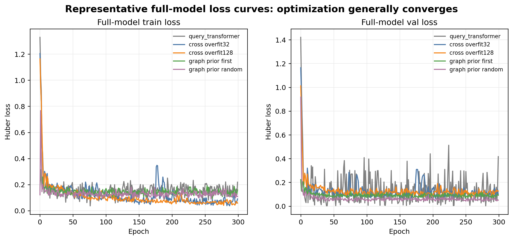
- 代表 full-model 实验 train/val loss 基本随 epoch 下降，优化过程没有明显发散。
- query_transformer 的 loss 也会下降，但输出仍可坍塌到均值解。
- 因此收敛页要和 corr、slope、pred std 一起看：loss 下降只能说明训练目标被优化，不能单独证明空间 readout 学对了。
Single-station loss 曲线
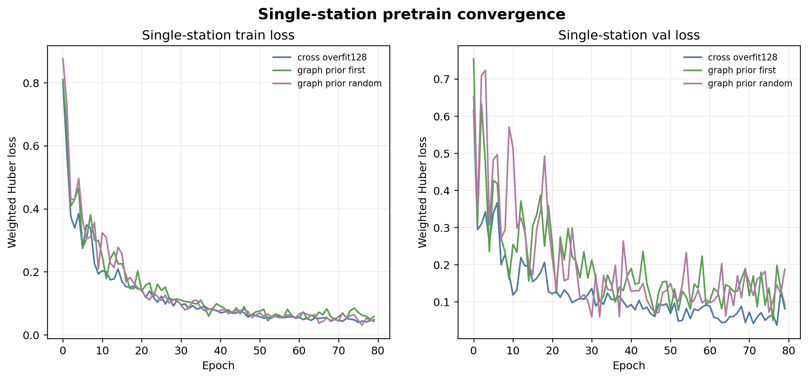
- single-station 预训练的 train/val loss 稳定下降。
- 这支持先把单台站 waveform 表征和 PGA prior 训练好，再把它作为 graph prior-residual 的输入。
- 接下来需要保存并汇报分任务 loss，避免 mag/epidist/PGA 之间被加权总 loss 掩盖。
两条路线对比
query_transformer
统一 token 模型，但 PGA/event 都容易常数化。
direct_station
证明 station feature/head 可用，但不能处理任意 target 空间传播。
cross-attention
target 显式读 station，适合诊断 readout。
graph prior-residual
引入 single-station prior 和距离传播，当前结果最好。
当前主要问题
- P-pick 准确性还没有人工抽查闭环，可能影响波形窗口和 station SNR。
- event mag/loc 联合训练仍会常数化，需要独立定位 event readout。
- PGA pred std 仍小于 target std，模型偏保守。
- 验证集太小，多 seed / 多 split 后结论才稳。
下一步实验建议
- 数据：做 P-pick 人工质检样本集，统计 pick 偏差和 STA/LTA 失败类型。
- Cross：event cross-attention + PGA event context gate + distance bias 消融。
- Graph：baseline-only / residual-only / prior-only / kNN / power p 消融。
- 评估：扩大 split，多 seed，记录 baseline-target corr、residual-target corr、attention top-k distance。
优先级
先确认 P-pick 与 label 对齐，再做 graph/cross 的结构消融。否则模型问题和数据问题会混在一起。
希望专家重点建议
- P-pick 的 STA/LTA refine 是否合理，哪些样本应该剔除或降权？
- PGA target 是否必须显式使用 event 信息？event 信息应如何进入模型？
- 距离衰减先验更适合作为 baseline、attention bias，还是 residual feature？
- 是否需要加入台站场地项、方位角、路径效应、区域衰减参数？
- 目前 overfit 诊断到哪一步可以转向更大训练集？